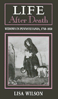

<body bgcolor="#FFFFFF" text="#000000" link="#0000FF" vlink="#CC0000" alink="#CC0000"><center><hr width="350" size="1" align="center" noshade>The experiences of widows in a society that imposed an ideology of proper female behavior<hr width="350" size="1" align="center" noshade><p><a href="https://cdcshoppingcart.uchicago.edu/Cart/ChicagoBook.aspx?ISBN=9780877228837&&PRESS=temple" target="_top">Buy this book!</a> | <a href="https://cdcshoppingcart.uchicago.edu/Cart/Cart.aspx?PRESS=temple" target="_top">View Cart</a> | <a href="https://cdcshoppingcart.uchicago.edu/Cart/Cart.aspx?PRESS=temple" target="_top">Check Out</a></p><p></p></center><!--none//--><h1>Life After Death</h1>
<H2>Widows in Pennsylvania, 1750-1850</H2>
<h3>Lisa Wilson</h3>
<P>cloth 0-87722-883-3 $63.50, <FONT COLOR=#990033>Out of Stock Unavailable</FONT>
<BR> 192 pp
</P><p>In early nineteenth-century Pennsylvania widows comprised 10% of the female population. Most never remarried. Lisa Wilson traces the experiences of widows in a society that imposed an ideology of proper female behavior. She challenges the common portrayal of widows as helpless women, unable to fend for themselves or their families. In lieu of their husbands, widows appeared in court, wrote wills, and conducted business transactions, despite the constraints of femininity. Using novels, advice literature, wills, probate records, and diaries to explore the lives of widows during this period, Wilson alters our understanding of the diversity of women's experiences and casts doubt on the "separate spheres" explanation of gender roles.
<p>The focus of this study, Chester and Philadelphia counties between 1750 and 1850, provides a backdrop from which many classes of widowed women can be observed. Wilson contends that, despite the dictates of their gender, many women were, in fact, partners rather than dependents of their husbands and, while carrying on business activities outside the home challenged prevailing ideas of femininity, for a widow, this concern was secondary to the often pressing needs of her family.
<BR>&nbsp;<h2>Contents</h2><P>
<p>Introduction
<br>1. "My Widowed State"
<br>2. Settling the Estate
<br>3. Poverty and Widowhood
<br>4. A "Man of Business": The Widow of Means
<br>5. A Death in the Family
<br>Conclusion
<br>Appendix
<br>Notes
<br>Index
</P><BR>&nbsp;<H2>About the Author(s)</H2>
<P><b>Lisa Wilson</b> is Assistant Professor of History at Connecticut College.</P>
<BR><H2>Subject Categories</H2>
<p><A HREF="/tempress/history.html" TARGET="_top">History</a>
<BR><A HREF="/tempress/women.html" TARGET="_top">Women's Studies</a>
</p>
<BR><h2 class="inpageheading">In the series</H2>
<P><I><a href="http://www.temple.edu/tempress/am_civ.html" onMouseOver="window.status='Click for other books in this series!'; return true;" onMouseOut="window.status=''; return true;" target="_top">American Civilization</a></i>, edited by Allen F. Davis.
</p><p>The focus of <i>American Civilization</i>, edited by Allen F. Davis, is American cultural history. In keeping with the interdisciplinary work in this field, which characteristically brings together art history, literary history and theory, and material culture, the titles in this series cover diverse aspects of American experience&#151from attitudes toward death to twentieth-century design innovations to images of country life in art and letters to trade unions' reliance on religious discourse. The series has been a pioneer in presenting work that uses photographs as historical documents and from its inception has been firmly committed to women's studies. As the first university press series in the field, <i>American Civilization</i> provided the inspiration and the standard for much of the interdisciplinary work developing in the contemporary academy.</p>
<p align="center"><a href="https://cdcshoppingcart.uchicago.edu/Cart/ChicagoBook.aspx?ISBN=9780877228837&&PRESS=temple" target="_top">Buy this book!</a> | <a href="https://cdcshoppingcart.uchicago.edu/Cart/Cart.aspx?PRESS=temple" target="_top">View Cart</a> | <a href="https://cdcshoppingcart.uchicago.edu/Cart/Cart.aspx?PRESS=temple" target="_top">Check Out</a></p><p><font face="Arial" size="1"><a href="copyright.html" onMouseOver="window.status='Web Copyright Policy';return true;" onMouseOut="window.status=''" title="Web Copyright Policy">&copy;</a> 2015 <a href="http://www.temple.edu" target="new" onMouseOver="window.status='Link to Temple University home page';return true;" onMouseOut="window.status=''" title="Link to Temple University home page">Temple University</a>. All Rights Reserved. http://www.temple.edu/tempress/titles/704_reg.html</font></p>